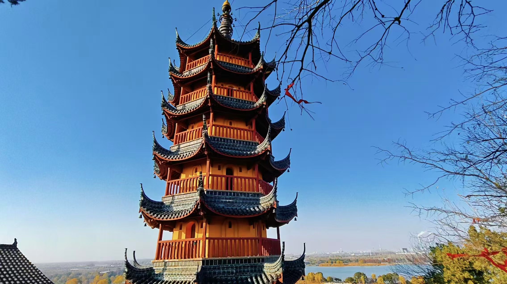

传奇：金山寺位于江苏省镇江市西北的金山上，始建于东晋明帝年间（323-325年），原名泽心寺，唐时称金山寺，宋真宗时赐名"龙游寺"，清康熙帝南巡时赐名"江天禅寺"。金山海拔43.7米，周长520米，原是长江中一个岛屿，有"江心一朵芙蓉"之称。清光绪年间，长江主泓道北移，金山与南岸相连，成为内陆山。金山寺建筑依山而建，殿宇楼阁层层相接，从山脚到山顶，殿厅栉比，亭台相连，有"寺裹山"的独特风貌。金山寺是中国佛教禅宗名寺，以佛印禅师、法海禅师闻名，更因《白蛇传》中"水漫金山"的故事而家喻户晓。寺内保存有众多珍贵文物，如苏东坡玉带、诸葛铜鼓、文徵明《金山图》等。金山寺是中国佛教水陆法会的发源地，在佛教史上具有重要地位。
核心看点：
游览攻略：
交通信息：金山寺位于江苏省镇江市润州区金山路62号。公交：乘2、8、12、34、35、49、102、133、204、215、601路公交到"金山公园"站。自驾：导航"金山公园"，公园有停车场。火车：乘高铁到镇江站，转公交或打车前往。长途汽车：到镇江汽车站，转公交或打车前往。周边景点有焦山（3公里）、北固山（2.5公里）、西津渡（2公里）、镇江博物馆（2公里）。距南京禄口机场80公里，车程1.5小时；距常州奔牛机场50公里，车程1小时。建议与焦山、北固山、西津渡组合游览，购买"三山一渡"联票。
建寺历史：金山寺始建于东晋明帝年间（323-325年），原名泽心寺。唐代，法海禅师（裴休之子）开山得金，重建寺院，改名金山寺。宋代，真宗皇帝赐名"龙游寺"。元代，寺院毁于战火，后重建。明代，多次扩建重修。清代，康熙帝南巡，赐名"江天禅寺"，并御笔题写寺额。太平天国时期，寺院受损严重。清代后期至民国，多次修复。1949年后，政府拨款修复。"文革"期间，寺院遭到破坏。1980年后，全面修复，恢复宗教活动。2000年，金山寺被列为江苏省文物保护单位。
高僧大德：金山寺历史上高僧辈出。①法海禅师：唐代高僧，金山寺开山祖师之一。裴休之子，出家为僧，开山得金，重建寺院。民间传说中，法海是《白蛇传》中的人物，但历史上的法海是得道高僧。②佛印禅师：宋代高僧，金山寺住持。与苏东坡是好友，常谈禅论道，留下许多佳话。③宗镜禅师：明代高僧，重修金山寺，制定寺规。④隐儒禅师：清代高僧，编纂《金山志》。⑤慈舟法师：近代高僧，弘扬佛法，培养僧才。高僧大德是金山寺的灵魂。
水陆法会起源：金山寺是中国佛教水陆法会的发源地。水陆法会全称"法界圣凡水陆普度大斋胜会"，是中国佛教最隆重的法会。据《释门正统》记载，南朝梁武帝夜梦神僧，告以六道四生受苦无量，应设水陆大斋普济群灵。武帝咨询宝志禅师，禅师建议参阅大藏经，编制仪轨。武帝在金山寺设坛，亲临法会，水陆法会由此开始。宋代，水陆法会盛行。明清时期，成为全国性法会。水陆法会体现了佛教的慈悲精神。
文人墨客：金山寺是文人墨客吟咏的胜地。①苏东坡：常游金山，与佛印禅师交厚，留下《游金山寺》《水调歌头》等名篇。②白居易：任苏州刺史时，游金山，作《登金山寺》。③王安石：游金山，作《金山寺》。④陆游：游金山，作《金山寺》。⑤文徵明：绘《金山图》。⑥康熙、乾隆：南巡时多次驻跸金山，题诗题字。文人墨客增添了金山寺的文化底蕴。
历史事件：金山寺见证了许多历史事件。①梁武帝设水陆法会：中国佛教史上重大事件。②宋金战争：韩世忠、梁红玉在金山阻击金兵。③明代抗倭：金山是抗倭前线。④太平天国：寺院受损。⑤抗日战争：日军侵占镇江，寺院遭破坏。⑥改革开放：宗教政策落实，寺院恢复。历史事件是金山寺的沧桑记忆。
保护修复：金山寺经历多次修复。①1980-1990年：政府拨款，全面修复。②2000年：修复大雄宝殿、慈寿塔。③2010年：修复藏经楼、楞伽台。④2020年：检测加固，保护古建筑。修复工程保护了这座千年古刹。
总体布局：金山寺建筑依山而建，形成"寺裹山"的独特格局。①山脚：山门、天王殿、大雄宝殿等主要殿堂。②山腰：法海洞、白龙洞、楞伽台等。③山顶：慈寿塔、江天一览亭等。建筑从山脚到山顶，层层升高，殿厅栉比，亭台相连，远望只见寺庙不见山，故有"金山寺裹山"之说。这种布局充分利用山地地形，节约土地，形成独特的空间序列。
建筑形式：金山寺建筑形式多样。①大雄宝殿：重檐歇山顶，面阔五间，进深四间，是寺内最大的殿堂。②慈寿塔：七级八面楼阁式砖木塔，高约30米，是金山寺的标志。③山门：单檐歇山顶，面阔三间，正中悬挂"江天禅寺"匾额。④藏经楼：二层楼阁，珍藏佛教经典。⑤亭台：江天一览亭、妙高台、楞伽台等。形式丰富，功能齐全。
建筑技术：金山寺建筑技术精湛。①木结构：大雄宝殿为抬梁式木构架，用材粗大，结构稳固。②砖石结构：慈寿塔为砖木结构，塔身用青砖砌筑，木构屋檐。③山地建筑：依山而建，采用台地、悬挑等技术。④防水防潮：长江边，建筑有良好防水措施。技术体现了古代工匠的智慧。
装饰艺术：金山寺装饰丰富多彩。①木雕：梁架、门窗、斗拱有精细木雕。②石雕：柱础、栏杆、碑刻有浮雕、圆雕。③彩绘：梁枋有彩绘，以青绿为主，间以金粉。④壁画：大雄宝殿内壁有佛教故事壁画。⑤匾额楹联：康熙、乾隆等皇帝御笔，文人墨客题咏。装饰具有江南寺庙的特色。
园林艺术：金山寺是园林式寺庙。①借景：借长江、焦山、北固山之景。②理水：有塔影湖、天下第一泉等水景。③植物：有古树名木，四季花卉。④路径：有石阶、曲径，步移景异。园林增强了寺庙的宗教氛围和游览价值。
建筑特色：金山寺的建筑特色鲜明。①寺裹山：建筑包裹山体，形成独特景观。②江天一览：位于长江边，视野开阔。③佛道融合：有佛教殿堂，也有道教元素（如白龙洞）。④文人气息：多处建筑与文人墨客相关。特色反映了金山寺的历史文化。
禅宗道场：金山寺是中国佛教禅宗重要道场。①传承：属禅宗临济宗。②修行：僧众坐禅、诵经、劳作。③法会：举办水陆法会、佛诞法会、盂兰盆会等。④讲经：高僧大德讲经说法。金山寺是江南禅宗的中心之一。
水陆法会：金山寺是中国佛教水陆法会的发源地。水陆法会是中国佛教最隆重、最盛大的法会，旨在超度水陆一切亡灵。法会历时七天七夜，设内坛、外坛，诵经礼忏，施食放生。法会程序复杂，仪式庄严。水陆法会体现了佛教的慈悲济世精神。金山寺每年举办水陆法会，吸引全国信众参加。
佛教艺术：金山寺是佛教艺术的宝库。①雕塑：三世佛、十八罗汉、观音等塑像，造型庄严。②绘画：壁画、卷轴画，题材为佛教故事。③书法：苏轼、文徵明等文人墨客的题咏。④音乐：梵呗、钟鼓，音乐庄严。佛教艺术丰富了金山寺的文化内涵。
《白蛇传》传说：金山寺因《白蛇传》"水漫金山"的故事而闻名。故事中，白娘子为救许仙，与法海斗法，水漫金山。虽然故事是民间传说，但增加了金山寺的知名度。法海洞、白龙洞成为传说遗迹。金山寺每年举办"白蛇传"文化旅游节，吸引游客。
文人雅集：金山寺是文人雅士聚集地。①苏轼与佛印：二人谈禅论道，留下许多趣闻。②文人题咏：白居易、王安石、陆游等留下诗篇。③书画创作：文徵明绘《金山图》。④琴棋书画：文人雅士在此交流。文人雅集提升了金山寺的文化品位。
现代传承：金山寺文化在现代得到传承。①宗教活动：正常开展，信众众多。②文化旅游：吸引游客，传播佛教文化。③学术研究：学者研究金山寺历史、艺术。④教育功能：举办佛学讲座、禅修营。金山寺是传统文化的重要载体。
历史价值：金山寺是历史的见证。①佛教史：水陆法会发源地，佛教史重要寺院。②建筑史："寺裹山"格局的典范，山地建筑杰作。③文学史：《白蛇传》故事发生地，文人墨客吟咏对象。④地方史：镇江历史文化的缩影。金山寺是"活的历史博物馆"。
艺术价值：金山寺是艺术的宝库。①建筑艺术：依山而建，殿宇巍峨。②雕塑艺术：佛像庄严，工艺精湛。③绘画艺术：壁画、卷轴画精美。④书法艺术：名家题咏，墨宝珍贵。⑤园林艺术：与自然和谐，景色优美。金山寺是"综合艺术博物馆"。
科学价值：金山寺蕴含科学技术。①建筑科学：山地建筑技术，结构稳固。②材料科学：木材、砖石等材料的应用。③环境科学：选址、布局的环境适应性。④保护科学：文物监测、修复技术。金山寺是科学技术的研究对象。
文化价值：金山寺是文化交融的象征。①佛教文化：禅宗道场，水陆法会发源地。②文学文化：《白蛇传》故事，文人诗词。③艺术文化：建筑、雕塑、绘画、书法。④民俗文化：庙会、法会等民俗活动。金山寺是江南文化的"基因库"。
社会价值：金山寺在社会中发挥重要作用。①宗教功能：满足信众宗教需求。②旅游功能：镇江最重要的旅游景点之一。③教育功能：传播佛教文化、传统文化。④社区功能：凝聚社区，促进和谐。金山寺是镇江的"城市名片"。
保护与传承：金山寺得到科学保护。①法律保护：2000年列为江苏省文物保护单位。②规划保护：制定保护规划，控制周边建设。③工程保护：多次修复加固，确保结构安全。④监测保护：建立监测系统，防止自然破坏。⑤研究展示：开展研究，出版资料，举办展览。⑥教育推广：举办讲座、导览，传播佛教文化。⑦社区参与：社区居民参与保护，形成保护网络。金山寺的保护经验，为古寺庙保护提供了成功范例。